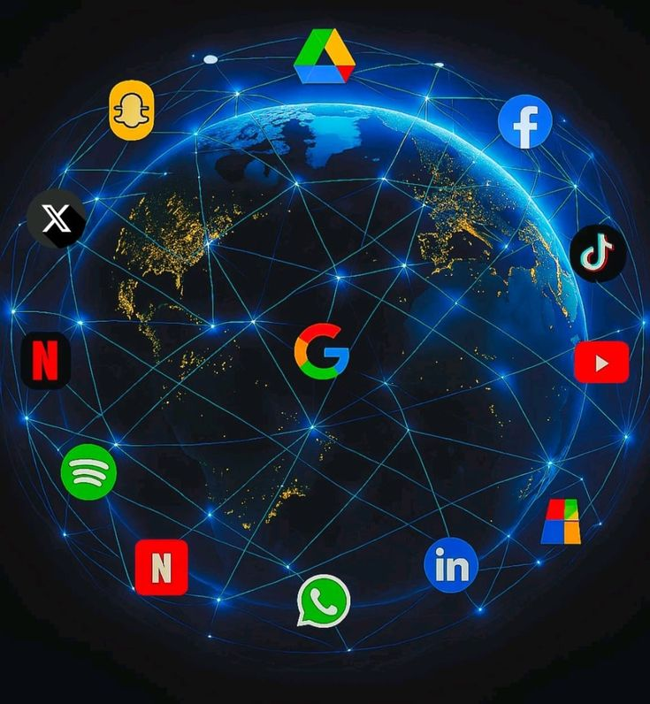

Introduction
The internet is one of the most important technologies in the modern world. It connects billions of devices, allowing people to communicate, access information, learn online, and use digital services from almost anywhere. Understanding how the internet works helps students build a strong foundation in networking and computer science.
The internet is a global network of interconnected computers and devices that communicate using standard networking protocols. Instead of being a single computer, the internet is made up of millions of networks connected together, allowing users to share information and access online resources.
How Does the Internet Work?
When you enter a website address into your browser, your device sends a request through your Internet Service Provider (ISP). The request travels across different networks until it reaches the server where the website is stored. The server processes the request and sends the website files back to your browser, which displays the page on your screen. This entire process usually takes only a few seconds.
The Main Components of the Internet
Several components work together to make the internet function efficiently. These include client devices such as computers and smartphones, web servers that store websites, routers that direct data between networks, Internet Service Providers that connect users to the internet, and communication protocols that ensure data is transmitted correctly.
Benefits of the Internet
The internet provides many advantages for individuals and organizations. It makes communication faster, provides instant access to information, supports online education, enables electronic commerce, allows cloud storage, and connects people across the world. These benefits have transformed the way people learn, work, and communicate.
Challenges of the Internet
Although the internet offers many benefits, it also presents challenges. Cybersecurity threats, online scams, misinformation, privacy concerns, and internet addiction are common issues that users should understand. Practicing safe browsing habits helps reduce these risks.
Best Practices for Safe Internet Use
The internet connects billions of devices and makes modern communication possible. Understanding how it works helps students and technology enthusiasts develop stronger networking knowledge and become more confident users of digital technology. As the internet continues to evolve, these fundamental concepts will remain essential for anyone interested in computer science and information technology.
Conclusion
The internet connects billions of devices and makes modern communication possible. Understanding how it works helps students and technology enthusiasts develop stronger networking knowledge and become more confident users of digital technology. As the internet continues to evolve, these fundamental concepts will remain essential for anyone interested in computer science and information technology.